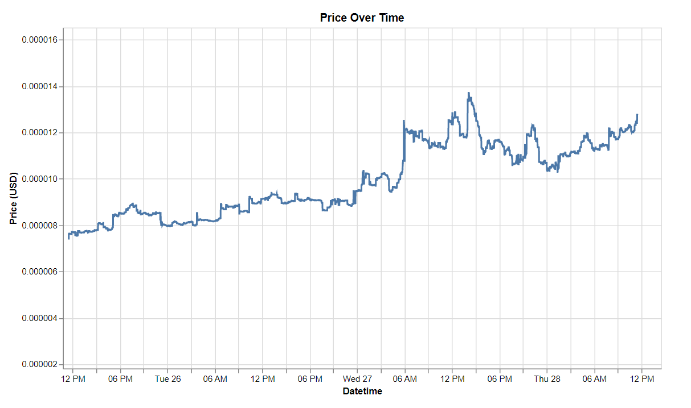
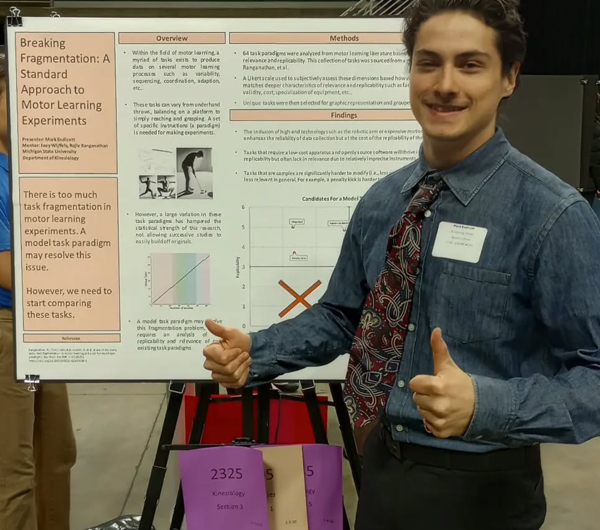
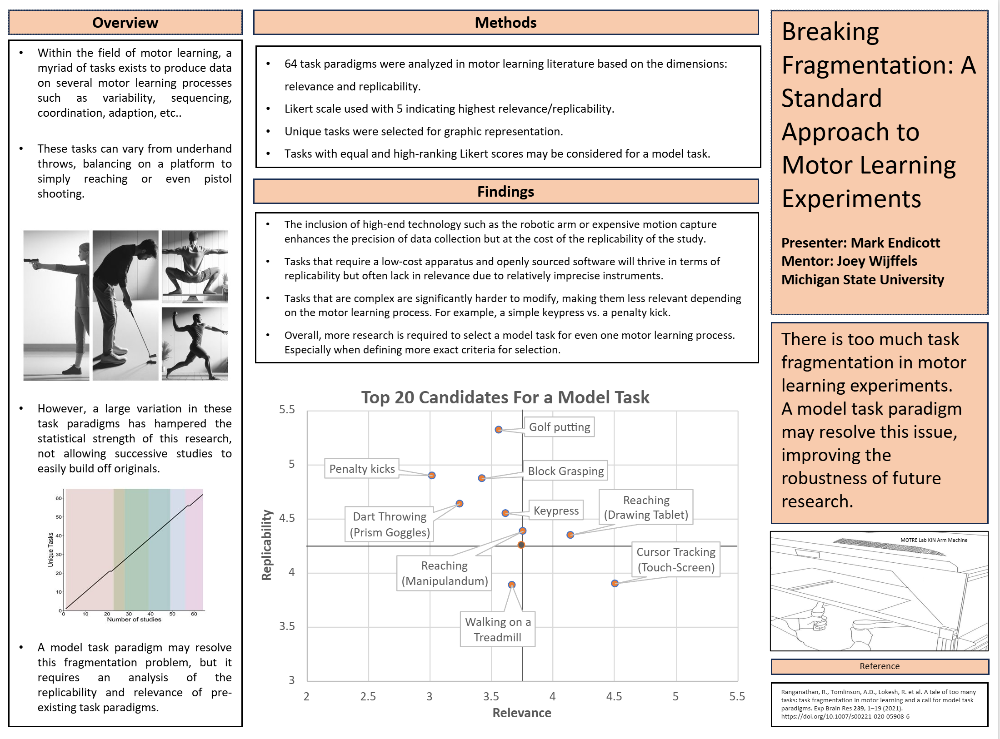
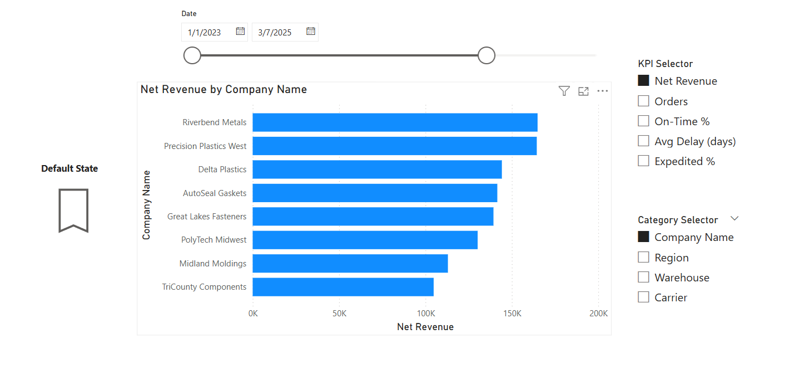

Data Science Student | Analytics & Project Management
April 2026 – August 2026
Shipped the web frontend (HTML/CSS/JavaScript) for a pre-seed startup's product. Delivered every feature as a reviewed pull request against Go backend specifications and demoed weekly to a 3-person async team. Wrote Gatekeeper from scratch, a prototype identity provider in Go, covering HTTP handlers, session cookies, bcrypt password hashing, and a SQLite schema with foreign-key constraints.
May 2024 – July 2024
Completed 170 hours of guided personal training under State of Fitness coaches, developing skills in exercise programming and client coaching. Assisted with customized workout plans and client progress tracking, and supported one-on-one and group sessions focused on strength, mobility, and endurance. Builds on a NASM Certified Personal Trainer credential held since 2018.
February 2023 – September 2025
Managed financial operations and project coordination for an 18-member cooperative housing organization. Built Tableau dashboards for chore tracking and reporting while maintaining budgets, audits, and utility management using Excel. Coordinated house projects using Agile methods for team coordination and sprint planning. Presented bi-monthly metrics and updates in house meetings to enhance transparency and accountability. Served as primary liaison with the Spartan Housing Cooperative to resolve complex financial and facilities issues.
January 2023 – April 2024
Conducted exploratory research in motor learning and cognitive neuroscience within a collaborative laboratory environment. Extracted and analyzed experimental task data using Excel from scientific literature, evaluating 64 task paradigms via Likert-scale assessment. Piloted graduate-level experiments to support peer research and hypothesis testing. Created PowerPoint presentations to disseminate key findings to the lab team, culminating in a poster presentation at MSU's Undergraduate Research and Arts Forum (UURAF).
May 2020 – August 2020
Supported biotech consulting operations through systematic data analysis and market intelligence. Extracted and analyzed NIH RePORTER datasets on life science companies that received SBIR/STTR awards, identifying geographic and technology trends. Prepared and presented weekly visual reports using Excel to facilitate insightful trend analysis, guiding the firm's biotech outreach strategy and client engagement efforts.
July 2022 – March 2023
Delivered quality food service in a fast-paced restaurant environment, preparing 50+ meals per shift while maintaining strict attention to quality, timing, and food safety standards. Collaborated with kitchen and front-of-house teams to streamline workflows, reducing preparation time and minimizing food waste. Consistently maintained customer satisfaction during high-volume service periods through effective time management and teamwork.
June 2018 – January 2021
Delivered high-quality service across multiple locations and roles including busser, server, and food runner, serving 200+ guests per shift in high-volume restaurant environments. Trained and onboarded new team members while maintaining consistent service standards across three locations in different states. Demonstrated strong adaptability and leadership capabilities by successfully transferring skills and knowledge across diverse teams and regional markets throughout a multi-year tenure.
May 2025 – 2026 | Independent Project with Senior Developer Mentorship
Backtested cryptocurrency trading strategies in Python on Kraken trade data, collaborating with a senior blockchain developer on run-time efficiency and code quality. Built the backtesting harness in Polars, pandas, and NumPy: trade loading, date-window filtering, slippage and fee modeling, and PnL reporting. Used it to compare momentum and volatility-based strategies against a buy-and-hold benchmark, and visualized granular price data and signals with Vega-Altair. Ran project management for the team (charter, milestones, SMART goals).
Granular Price Data Using Vega-Altair:

Project Artifacts:
Note: This is an example draft, not the code actually used.
March 2024 | Presented at UURAF
Conducted comprehensive evaluation of 64 motor learning task paradigms extracted from scientific literature, assessing each on reproducibility, scalability, and experimental rigor using standardized Likert-scale metrics. Performed all analysis and visualization in Excel, leveraging pivot tables, advanced charting capabilities, and statistical functions to identify patterns and trends across the motor learning research landscape. The Excel-based workflow enabled systematic data organization, quantitative scoring, and visual synthesis of research findings. Synthesized findings into a standardized framework proposing best practices for task selection in motor learning experiments. Presented results via poster presentation at MSU's Undergraduate Research and Arts Forum (UURAF), communicating complex research findings to diverse academic audiences.
Final Poster Draft:

Precursor Draft:

Project Artifact:
September 2025MSU Broad Datathon
Prototyped an interactive dashboard solution for Connected Midland's supply chain management platform using Excel, Tableau-style visualizations, and Power BI. Implemented key performance indicators including on-time delivery percentage, delay counts, and forecast error metrics (MAPE - Mean Absolute Percentage Error) with dynamic slicers and parameter controls for flexible data exploration. Performed initial data cleaning and analysis in Excel before building visualizations, ensuring data quality and metric accuracy. Designed user-friendly interface prioritizing clarity and actionability for supply chain decision-makers. Proposed comprehensive data-validation rubric and weekly data refresh schedule to improve platform trust and drive user adoption across the organization.
Building a User-Friendly Dashboard:

Project Artifacts:
Ongoing | October 2024 – Present
Ongoing analytics initiative focused on operational improvement for cooperative housing management. Collaborated with Spartan Housing Cooperative (SHC) treasurer to analyze fair market rent as a proxy metric for housing affordability, providing data-driven insights for rental pricing strategies. Produced dashboards tracking financial trends, utility usage patterns, and chore adoption rates across the 18-member cooperative household. Delivered comprehensive markdown report to SHC leadership documenting findings and recommending operational improvements based on quantitative analysis of household operations and member engagement patterns.
March 2025Harvard Hackathon
Collaborated within a 5-person team to develop an NLP-based large language model (LLM) tool using Python for automated classification of gene-disease mechanisms and matching therapeutic approaches. The framework streamlines pre-IND (Investigational New Drug) drug discovery processes through automated extraction and analysis of biomedical literature and research databases. Utilized Git for version control and cloud-based development tools for team coordination during the hackathon. Solution addressed critical bottleneck in rare disease research by accelerating the identification of potential therapeutic targets and mechanism-of-action pathways.
Data science student with hands-on experience building dashboards, analyzing data, and coordinating multi-stakeholder projects. Demonstrated ability to translate ambiguous requirements into clear metrics, timelines, and actionable insights. Proficient with Python, Excel, Tableau, and Power BI, with working knowledge of SQL. Track record of and delivering data-driven solutions across research, finance, and analytics domains.
Expected May 2027
Minor: Information Technology
January 2018
November 2024